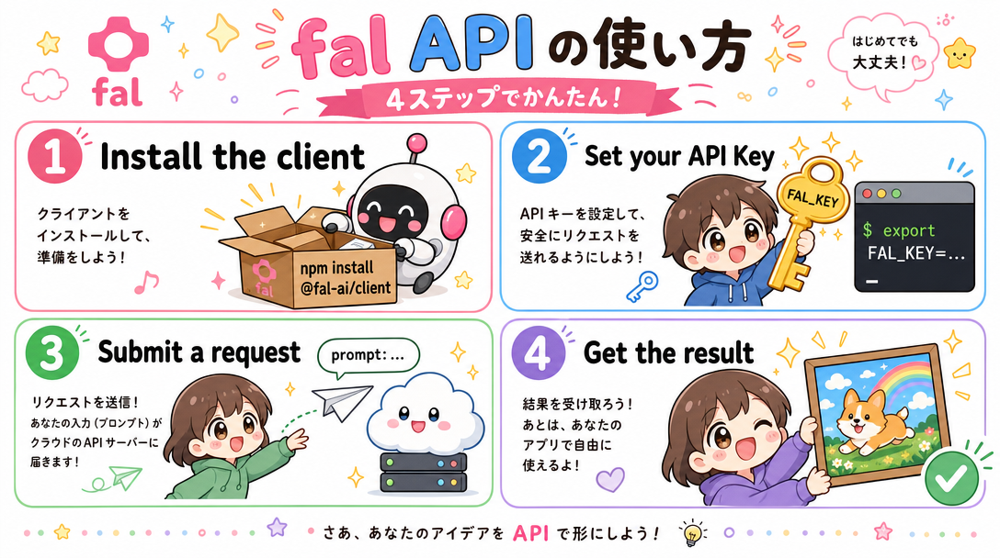

対応形式
バナー
インフォグラフィック
LP
対応業種
採用
不動産
金融
教育
レジャー
制作フロー
設計 → 生成 → 選定 → 仕上げ
Works
つくったもの、ぜんぶ。
成果物タイプ
業種・テーマ
該当する作品がありません。条件を変えてお試しください。
Method
「つくる」は、設計すること。
AI開発は画像を生成するだけの作業ではありません。目的の言語化から仕上げの微調整まで、4つのステップで成果物の質をつくり込みます。
-
01
プロンプト設計
誰に・何を・どんなトーンで伝えるかを言語化し、構図やタイポグラフィまで含めて指示に落とし込みます。
-
02
生成
fal.ai（gpt-image-2）で複数パターンを一気に出力。ひとつの依頼から異なるトーンの案を並行して検討します。
-
03
選定
目的とブランドの温度感に照らして案を絞り込み、必要であれば要素だけを再生成して精度を上げます。
-
04
ブラッシュアップ
文字組み・余白・色味を手作業で微調整。生成物を「素材」から「成果物」に仕上げます。

Example
このノウハウ発信自体が、実例です。
「fal APIの使い方」は、上のプロセスをそのまま使って制作したインフォグラフィックです。複雑なAPIの利用フローを、専門知識がなくても迷わず読めるビジュアルに翻訳しました。
Guide
あなたの立場から探す。
業種によって、抱えている課題も求める見せ方も違います。近いお悩みのカードから、関連する作品をチェックできます。